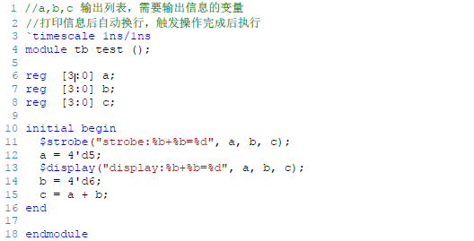

FPGA-02-Verilog语法
本文介绍Verilog HDL基本语法，主要将该代码与类似的C/C#语言代码进行对比，根据架构的不同强调表示形式的差异。
语法
逻辑值
FPGA内逻辑值除0、1外新增高阻态Z，表示无驱动。而实际运行中还可能出现亚稳态。
标识符
标识符用于定义常数、变量、信号、端口、子模块或参数名称，大小写则为不同变量。自定义标识符需要为数字、字母、下划线、$等，且首字母需要为字母或者下划线。
类似于C语言的关键字，如int、void、const等等。自定义标识符不能与关键字冲突。
常量
Verilog中不变的值，分为整形、实型、字符串型。
在表示整形数据时可以有以下几种：
1 | 16 //位宽32的整数 |
类似于C语言存在整形提升或数据截断，Verilog也存在此种问题。
例如，C语言使用uint8_t data_a = 0x123;uint8_t data_b =0x1;定义两个变量，数据类型为8bit位宽，显然前者溢出而后者补足。类比到Verilog中只是修改了表述方式，在赋值时赋予位宽，而且不用按8bit对齐：
1 | a = 8'h123; //溢出，随后截断为0x23 |
实型数据，说白了就是浮点型，小数，可以采用123.45e2表示数值12345。
字符串指双信号中的字符序列，与C一致，存储的ASCII码值。例如下方字符串同样可以用在verilog内 :
1 | char * log_str = "Open log file."; |
变量类型
Verilog的变量类型基于FPGA的结构基础。FPGA可以抽象成若干门电路，其内部是电路的连接，因此定义变量时即分为：
- 线网：物理电路层面的通路，wire；
- 寄存器：软件层面的变量，reg；
always或initial中被赋值的量数据reg量，assign分配的量属于wire型量。
C语言最底层的设计最多是操作硬件IO，大多数是存储在堆、栈里的软件量，进行软件层面的运算。Verilog是直接基于电路，搭的是电路，软件量用于进行辅佐运算。
参数
此处参数是指module块内部的参数，用于定义状态机的状态、数据位宽和计数器计数个数大小等。例如下方定义的的CNT_MAX：
1 | Parameter CNT_MAX = 25'd24_999_999 |
在实例化模块时可以配置参数：
1 | counter |
那么我们可以这么类比C语言，一个module可以当做一个函数，如下：
1 | module test( |
在不管内部如何处理的情况下，其中的输入、输出、输入输出就可以类似为下方的a、b、c，只不过所处的位置不同，修饰也更加直观:
1 | int test(const int a,int * b) |
赋值
此处应当注意，Verliog中包括 =以及<=两种符号。首先思考其底层结构——门电路，搭建的不同的物理电路当然可以执行多个程序流（目前还没学到，暂时这么称呼），也就是常说的并行逻辑。
MCU则是顺序执行逻辑，从上至下，从外至内逐步执行。为了达到类似的并行效果，衍生出了FreeRTOS、uCOSIII等操作系统，频繁切换线程达到并行的假象。
MCU上有顺序转并行的方案，FPGA上也有类似的顺序执行的模块，比如说每个always块上是一个互相独立的并行块，那么always内部应该可以通过某种方式来达到顺序执行的效果——引出阻塞、非阻塞赋值。
非阻塞赋值 <=
非阻塞赋值不会影响下一个语句的执行。**在某个时刻，一段非阻塞赋值代码是同时执行的，所有代码执行完后再进行赋值操作、刷新结果。**例如下方代码，假设a初值为1：
1
2a <= a+1; //line 1
b <= a; //line 2那么在运行时，line 1 与 line 2 同时执行，用于运算的a值为1，运行完后
a=2，b=1。阻塞赋值 =
阻塞赋值语句按照顺序执行，执行完立即进行赋值操作、刷新结果，上一句代码会影响下一句的执行。例如：
1
2a = a + 1; //line 1
b = a; //line 2上方的代码在运行时，执行完line 1得
a = 2，立刻将该值用于下一句代码，得到b=2。
这种思路与C中a++和 ++a类似，阻塞就是a++用上一时刻的值进行计算，随后刷新，而非阻塞就是++a，我执行完代码，立刻用新的值进行后续运算。
运算符
算术运算：
+、-、*、/关系运算：
>、<、>=、<=，在没有括号的情况下优先进行算术运算。归约运算/位运算：
&、|、^、~&、~|、~^C语言中的位运算符属于双目运算符(C++、C#暂且不说)，而Verilog中可以用于一个变量得出一个bit值，如下：
1
&4b'1010 = 1&0&1&0 = 1'b0
如果把1个bit当作一个门的输出，那么一个数据的归约运算当然可以看作多个电路接入一个与或非门。
在Verilog中，双目运算和C基本一致，但是限定左右参数位宽一致
逻辑运算：
&&、||、!=等，不再赘述移位运算符：
<<、>>，逻辑与C基本一致。但是右操作数如果为x（不定值）或z（高阻），那么运算结果为不定值。条件运算符：
exp1 ? action1 : action2，这个表达式与C一致，多层嵌套时也是就近结合。
运算符的优先级：一元（归约）>二元（算术、移位、关系、等和不等、按位运算）>三元（条件运算）。
其优先级也类似C语言，一般使用()区分。
- 位拼接标识符：
{,}，常用来拼接不同位宽的数据，同时可以实现数据右移和左移。
选择语句
与C语言相同，包括if-else 和case 语句，在此不再赘述。但是需要注意：
- 如果if语句没有else块，可能会在组合逻辑中产生latch
- if语句尽量写成多个else if的分支形式，而不建议写成if else 内嵌套if else的语句
参数类型
把该节起名为参数类型的原因是希望参照C语言的函数，划分输入输出的思路。
Verilog的参数类型可以划分为input、output、inout三类，我们可以这么类比：
1 | module test |
- sel、data_out: 物理线型输入参数
- data_bus: 物理线型可输入可输出参数，例如I2C数据线
- data_in: 物理线型输出参数
那么显式的对比到C语言中：
1 | volatile uint8_t test |
- 其中的volatile表示易变量。每次从硬件地址重新读取
- 其中的const显示表示这个量不可被软件层面修改
- verilog中若有多个输出，C中可集成在一个结构体中
仿真
时间单位与精度
1 | // 单位1ns 精度1ns |
其中前者是时间单位，后者是仿真的最小刻度，精度必须小于时间单位。
调试函数
FPGA里的函数依靠$符号为区分，功能类似C。
$display 打印信息,打印后自动换行
1
2$display("$d+%d=%d",a,b,c);
$display("Hello");等价于printf，例如printf(“%d”,a);但是$display可以不加格式符，默认为十进制。
这个例子用C#函数来解释就是Console.WriteLine(…);函数
$write打印信息
用法几乎完全同
$display，但是**write可以使用换行符**1
$write("%d+%d=%d\n",a,b,c);
$strobe，格式同$display。但是该函数是在触发操作后执行的。 例如下方代码，在
initial块触发最后执行。
$strobe代码示意1
2display:0101+xxxx=x
strobe:0101+0110=11$ monitor，持续监测量，使用格式同上方几个函数。但可以理解为C语言中的数据断点，当监测量变发生化时输出调试信息。
1
2
3
4
5
6
7
8initial begin
a = 5; //输出
#100;
b = 6; //输出
#100;
c = a + b; //输出
end
initial $monitor("%d+%d=%d",a,b,c);
终止函数
- $stop，暂停仿真。可使用modelsim指令或按键继续仿真。
- $finish，结束仿真。只可重新开始。
配置函数
$time，返回64bit当前仿真时间
$random，产生随机数
1
2always #10 a = $random;
initial $monitor("a = %d @time %d",a,$time);$readmemb，读取二进制文件
$readmemh，读取十六进制文件
1
2
3
4
5
6
7
8
9reg [7:0] a [20:0]; // 21位位深，8位位宽的数组
//等价于 uint8_t a[21];
initial begin
$readmemb("text.txt",a);
for(i = 0; i<=20; i=i+1 ) begin
#10;
$write("%s",a[i]);
end
end
--------------------------- End ---------------------------
与人同行的前提是，你要先在路上。